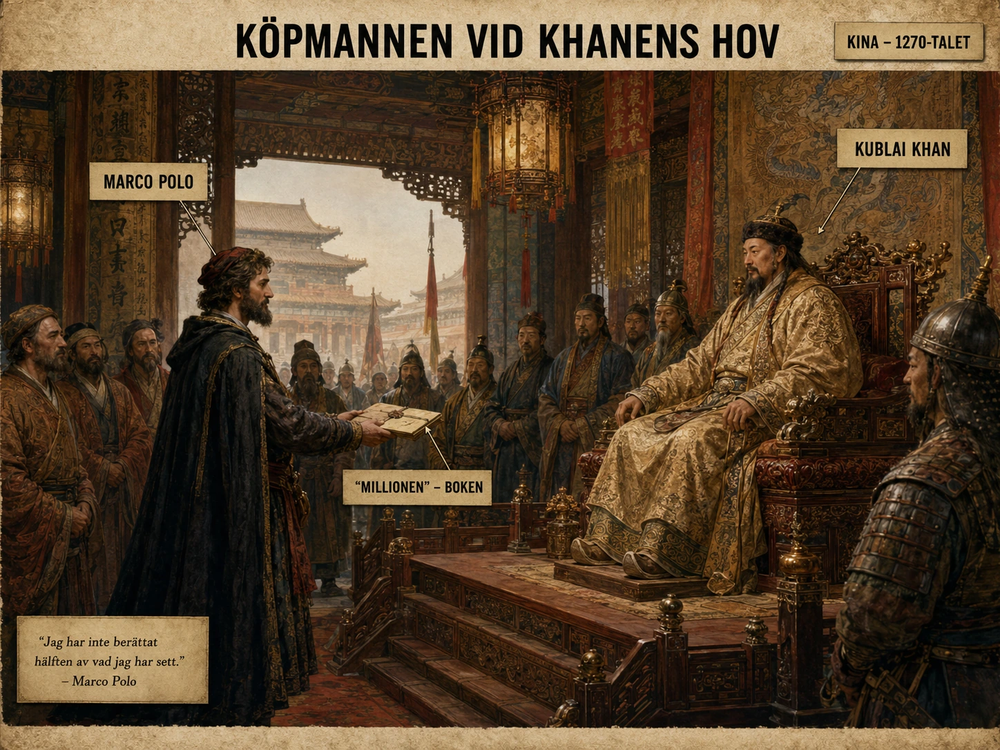

En ung man i en stad mot havet
Tänk dig en ung venetiansk köpman på 1200-talet. Han växer upp i en stad där havet är som en motorväg, där skepp kommer och går, där köpmän talar om Konstantinopel, Alexandria, kryddor, siden och märkliga riken långt bort. För de flesta européer är Asien inte en tydlig plats på kartan. Det är snarare en blandning av rykten, handelsvaror, religiösa berättelser och fantasier. Men för italienska köpmän, särskilt i Venedig och Genua, är världen större än för de flesta andra.
Det är i denna värld Marco Polo blir berömd.
Resan
Marco Polo föddes i Venedig omkring 1254. Hans far Niccolò och farbror Maffeo var handelsmän som redan hade rest österut. När Marco var ung gav han sig av tillsammans med dem på en lång resa genom Asien. Enligt den traditionella berättelsen nådde de fram till den mongoliske storkhanen Kublai Khan, som härskade över ett enormt rike i Kina och Centralasien. Resan ska ha pågått från 1271 till 1295, och under en stor del av tiden befann sig Marco i khanens värld.
Mongolerna och de öppnade vägarna
För att förstå varför detta var möjligt måste man förstå mongolernas roll. Under 1200-talet hade mongolerna skapat ett av världshistoriens största sammanhängande imperier. Det var våldsamt byggt, men det fick också en viktig konsekvens för handel och resor: stora delar av Eurasien hamnade under samma politiska maktsfär. Vägar som tidigare hade varit splittrade mellan många fiender kunde under vissa perioder bli lättare att färdas på.
Det betyder inte att resan var enkel. Den var fortfarande farlig, långsam och osäker. Men den var mer möjlig än den hade varit under många andra perioder. Forskare brukar tala om denna tid som *Pax Mongolica* — den mongoliska freden — fast freden i sig var allt annat än fridfull. Den var en ordning som byggts på erövringar.

En värld de aldrig hade föreställt sig
Marco Polos berättelse beskriver städer, hov, vägar, rikedomar, sedvänjor, varor och människor långt bortom Medelhavet. För en medeltida europé måste texten ha känts som att öppna ett fönster mot en nästan ofattbart stor värld. Han berättade om enorma städer, papperspengar, postväsen, kol som bränsle, palats, hamnar och handelsplatser.
Sådant utmanade européernas bild av världen. Europa framstod inte längre självklart som världens mittpunkt. Tvärtom — Asien framstod som rikare, större och mer organiserat.
Rustichello-frågan
Men här blir berättelsen extra intressant: hur säker kan man vara på Marco Polo?
Boken vi förknippar med honom skrevs inte ner av honom ensam vid ett skrivbord hemma i Venedig. Enligt traditionen satt Marco i fångenskap i Genua efter en konflikt mellan Venedig och Genua. Där berättade han om sina resor för Rustichello da Pisa, en man som var van vid riddarromaner och berättande litteratur. Rustichello skrev ner berättelsen. Det gör att boken inte bara är en resejournal. Den är också en litterär produkt.
Det är detta som brukar kallas Rustichello-frågan. Hur mycket är Marco Polos minnen? Hur mycket är Rustichellos sätt att skriva? Hur mycket bygger på sådant Marco själv såg? Hur mycket kan ha kommit från andra köpmäns berättelser?
Boken — som senare blev känd som Il Milione — blev ett klassiskt verk i reselitteraturen och öppnade nya geografiska vyer för europeiska läsare. Samtidigt har historiker länge diskuterat vad Marco verkligen såg och vad han kan ha återgett från andra källor. Vissa har till och med ifrågasatt om han nådde Kina alls.
Inte allt eller inget
Det viktiga är inte att tänka: "Antingen är allt sant eller allt påhittat." Historia fungerar sällan så enkelt. En bättre fråga är: Vad kan berättelsen lära oss om Europas kontakt med Asien?
Även om varje detalj inte kan bevisas, visar Marco Polos bok att italienska köpmän hade ett större kunskapsfält än många andra européer. De visste att lyxvaror inte bara "dök upp" i Venedig. De kom från kedjor av handelsplatser, mellanhänder och riken långt österut. Siden, kryddor, ädelstenar och porslin bar med sig berättelser om andra världar.
När Sidenvägen får människor
Marco Polo konkretiserar därför Sidenvägen. I en vanlig lärobok kan Sidenvägen lätt bli en linje på en karta. Men genom Marco Polo får linjen människor: köpmän, tolkar, kameldrivare, ämbetsmän, khaner, skrivare, sjömän och vakter. Vägen blir inte bara geografi. Den blir erfarenhet.
Boken som blev kvar
Hans bok påverkade också Europas världsbild. Den spreds i handskrifter långt innan tryckpressen gjorde böcker vanligare. Senare lästes den av människor som försökte förstå världen utanför Europa. Under de stora europeiska upptäcktsresornas tid på 1400- och 1500-talen användes Marco Polos geografiska uppgifter av sjöfarare och kartritare. Cristoforo Colombo hade ett exemplar med sig på sin första resa över Atlanten — fyllt med hans egna anteckningar i kanterna. Det betyder att en berättelse från 1200-talet kunde leva vidare och påverka hur européer föreställde sig Asien flera hundra år senare.
En annan sorts möte
Men det finns en viktig skillnad mellan Marco Polos värld och senare europeisk kolonialism. Marco Polo reste inte som en erövrare med kanoner och kolonier bakom sig. Han reste som köpman, gäst, tjänare, iakttagare och berättare. Han kom från en rik handelsstad, men Europa var inte den självklara härskaren över världen. Tvärtom beskriver hans berättelse ett Asien som ofta framstår som rikare, större och mer organiserat än Europa.
Det är kanske därför berättelsen blev så kraftfull. Den visade européerna att världen var större än de trodde — och att mycket av världens rikedom och kunskap fanns långt bortom deras egna städer.
Två sanningar på en gång
Marco Polo är alltså viktig inte bara för vad han såg, utan för vad européer trodde att han hade sett. I historia spelar båda sakerna roll. Händelser påverkar världen, men berättelser om händelser påverkar också världen. Marco Polo blev en bro mellan verklig handel och europeisk fantasi. Han gjorde Asien mer konkret, men också mer laddat med drömmar.
När du läser om Marco Polo bör du därför hålla två tankar i huvudet samtidigt. För det första: han visar hur långväga handel band ihop Europa och Asien. För det andra: hans bok visar hur kunskap formas, skrivs om, förstoras och sprids.
Marco Polo var kanske inte den förste europén som nådde Asien. Han var inte heller den mest exakte geografen. Men han blev en av de mest inflytelserika berättarna om Asien i Europas historia.